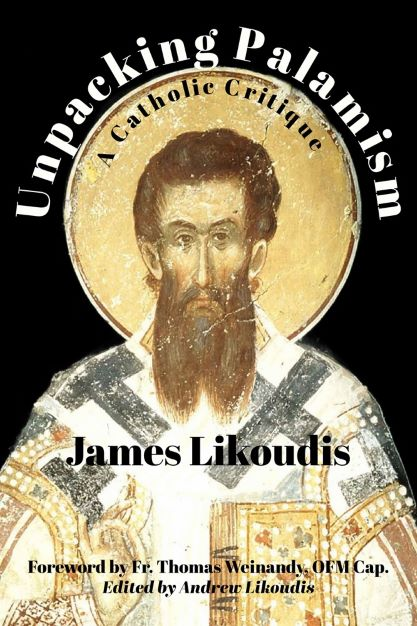

NEW!
UNPACKING PALAMISM: A Catholic Critique
A Book by Dr. JAMES LIKOUDIS
| TITLE | UNPACKING PALAMISM: A Catholic Critique |
| PUBLISHER | ENROUTE Publishing |
| AVAILABILITY |
By contacting Enroute Publishing on the home link above, or can be purchased directly by clicking this link at Enroute Publishing |
| PRICE | Paperback $14.95 each - or eBook (Kindle) $9.99 |
| by James Likoudis with essays selected and edited by Andrew Likoudis |
 |
Unpacking Palamism: A Catholic Critique, penned by esteemed scholar Dr. James Likoudis, meticulously scrutinizes the doctrines of Palamism, a theological construct found in Eastern Orthodoxy, but seemingly less than essential to it. This Palamite system, controversially claimed to be foundational to Eastern Orthodoxy, primarily involves the essence-energies distinction made famous by Hesychast monk Gregory Palamas. Dr. Likoudis examines the tenets of this system, discussing their place in Eastern Orthodox theology and ecumenism. He assesses the scriptural and traditional foundations of Palamism, as well as providing a Catholic lens through which to understand it, in the hopes of resolving longstanding difficulties in the way of full unity between the Catholic and Eastern Orthodox Churches.
| By Land Mail | 593 Allison Dr., Ann Arbor, MI 48103 |
| By E-Mail |
| ENDORSEMENTS AND REVIEWS OF THIS BOOK |
| By Philip Blosser | By Fr. Daniel Dozier |

About Dr. James Likoudis
James Likoudis is an expert in Catholic apologetics. He is the author of several books
dealing with Catholic-Eastern Orthodox relations, including his most recent "The Divine
Primacy of the Bishop of Rome and Modern Eastern Orthodoxy: Letters to a Greek Orthodox
on the Unity of the Church." He has written many articles published by various religious
papers and magazines.
He can be reached at: , or visit Dr. James Likoudis'
Homepage